An AI chef for what's already in your kitchen.
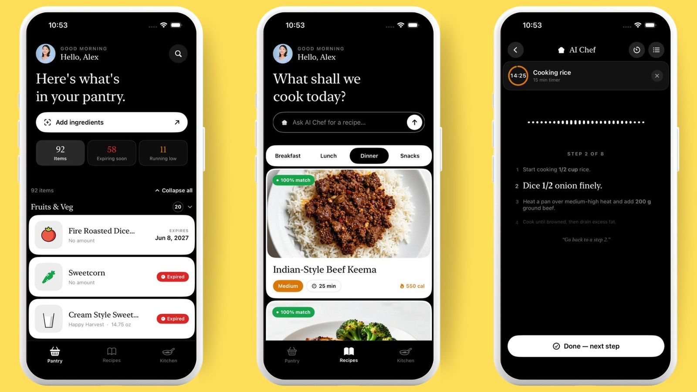
My roommate's pantry was always full, and we still threw food away every month. The problem was never the food. It was remembering what was there. I call it pantry amnesia, and PantryChef is my fix for it.
01The problem
I noticed this living with an American roommate. Her pantry and fridge were always full. Every few months we would clean them out and throw away bags of expired food, some of it covered in mold. It never made her shop less. The food was there the whole time. She just could not remember it at the moment that mattered: standing in the kitchen, deciding what to cook.
She is not unusual. The EPA estimates the average American household throws out about $56 of food every week, close to $3,000 a year, and the USDA puts total waste at 30 to 40 percent of the US food supply. The information that would stop it exists. It is sitting on the shelf. It just never reaches the two decisions that matter: what do I cook tonight and what do I need to buy.
Pantry apps have tried to fix this before, and they all die the same way: they ask you to type in your groceries and keep the list updated by hand. The upkeep costs more than the list is worth, so people quit within weeks. That became my one hard rule: if adding food to the app takes effort, nothing else matters.
02Who it's for
25 to 40, couples or single professionals in city apartments. Small kitchen, full pantry, a veg drawer they feel guilty about.
"I bought food to cook, ran out of time and ideas, and threw half of it out. Again."
They already cook most weeknights. Surveys put the average American at 4 to 6 home-cooked dinners a week, so a better answer to "what's for dinner" pays off almost daily.
Who it's not for: meal-preppers who already plan every dish (no pain to solve), and big families doing one weekly shop (their problem is planning, not memory). Deciding who it is not for is what kept the menu focused and the capture flow simple.
03The product is a loop
Four steps, each feeding the next. Easier capture means better suggestions. Honest deduction means tomorrow's menu pushes what is closest to expiry.
Capture
Your whole pantry, in. Photo, barcode, or voice.
Curate
A fresh daily menu you can cook today.
Cook
The chef guides you, by chat or by voice.
Deduct
What you used comes off your stock on its own.
Get a real pantry in, without typing a word
Epic goal: a full kitchen becomes a live, counted inventory in under a minute, with zero typing.
%20Pantry%20input.jpeg)
Three easy doors in
What it fixes: typing in groceries is the reason every pantry app before this one died.
PhotoMain path
Snap a shelf, a product, or a receipt. The vision model reads the name, brand, and size of every item it can see. One photo of a receipt can log an entire shop.
Barcode
The phone scans the code, then looks it up in the open Open Food Facts database. Verified product data, not a model guess.
Voice
Just say what you bought while you unpack the bags. Speech is handled on the phone itself.
Design call: the easiest path, a photo of the receipt, is the main one, not a side feature.
%20inventory%20confirmation.jpeg)
The trust layer: the model says what it isn't sure of
What it fixes: a quietly wrong inventory ruins every recipe after it, and loses the user for good.
Every capture path lands on one review screen, and you confirm four things per item: the name, the quantity, the count, and the expiry date. The model pre-fills all four and flags what it was unsure about; one item here reads "brand partially obscured, assumed generic pantry brand." The editor adapts to the product: a draggable fill level for jars and liquids, a piece counter for eggs and fruit. Tracking amounts and dates, not just names, is what makes "running low" and "expiring soon" possible later.
04Testing the camera before trusting it
Photo capture is the main promise of the product, which makes it the biggest risk. If the model misreads the shelf, every recipe after it is wrong. So before building on it, I benchmarked five vision models on my real kitchen.
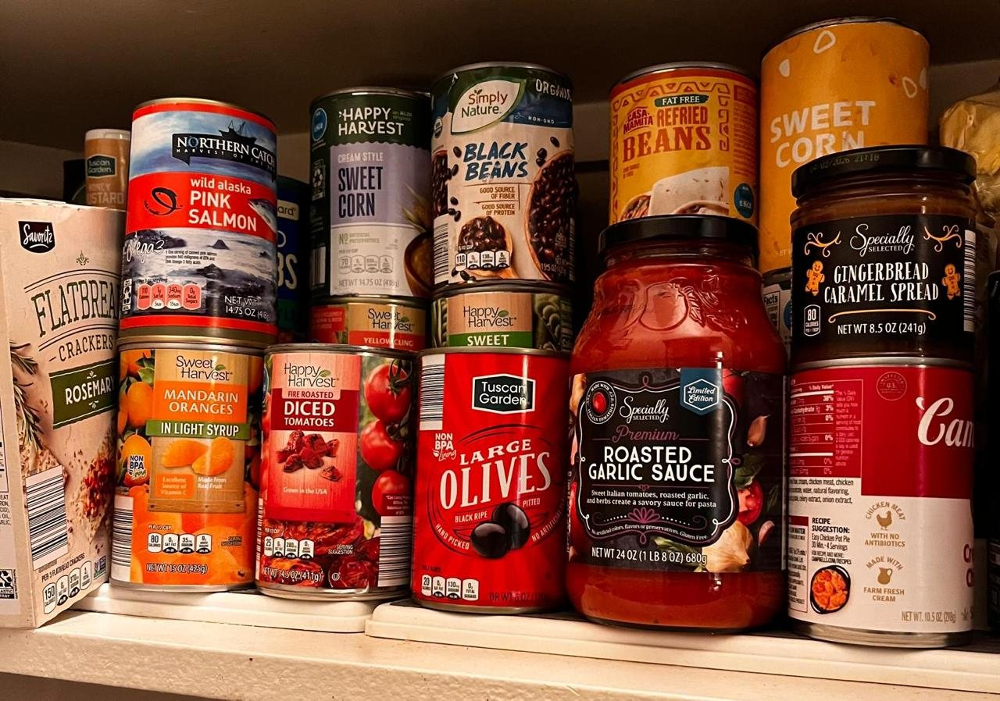
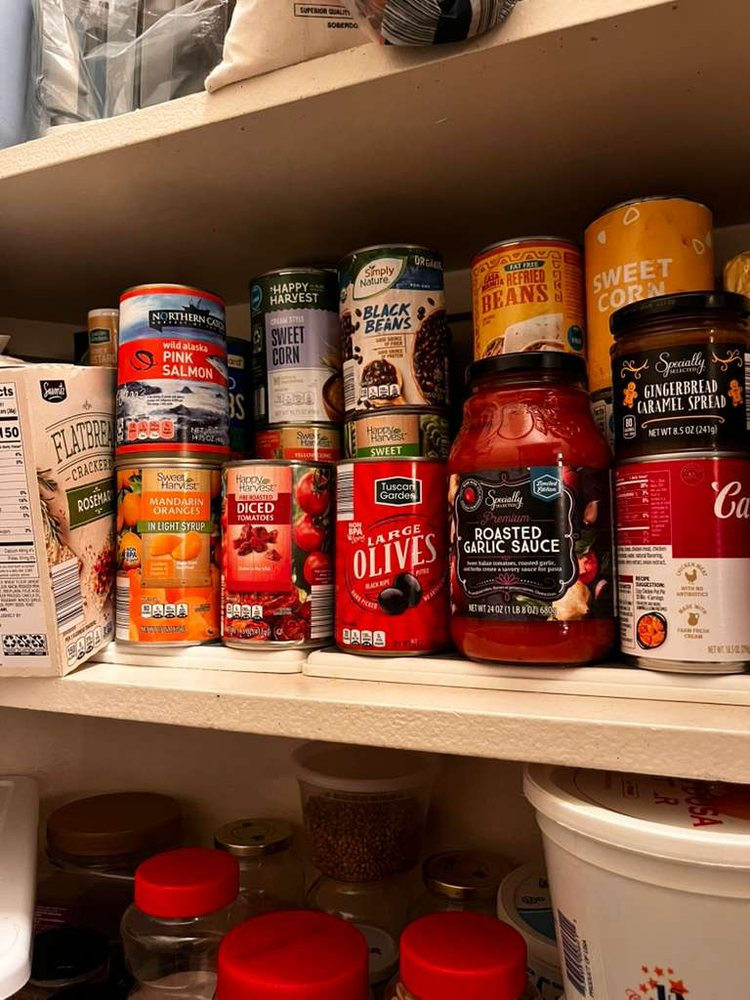
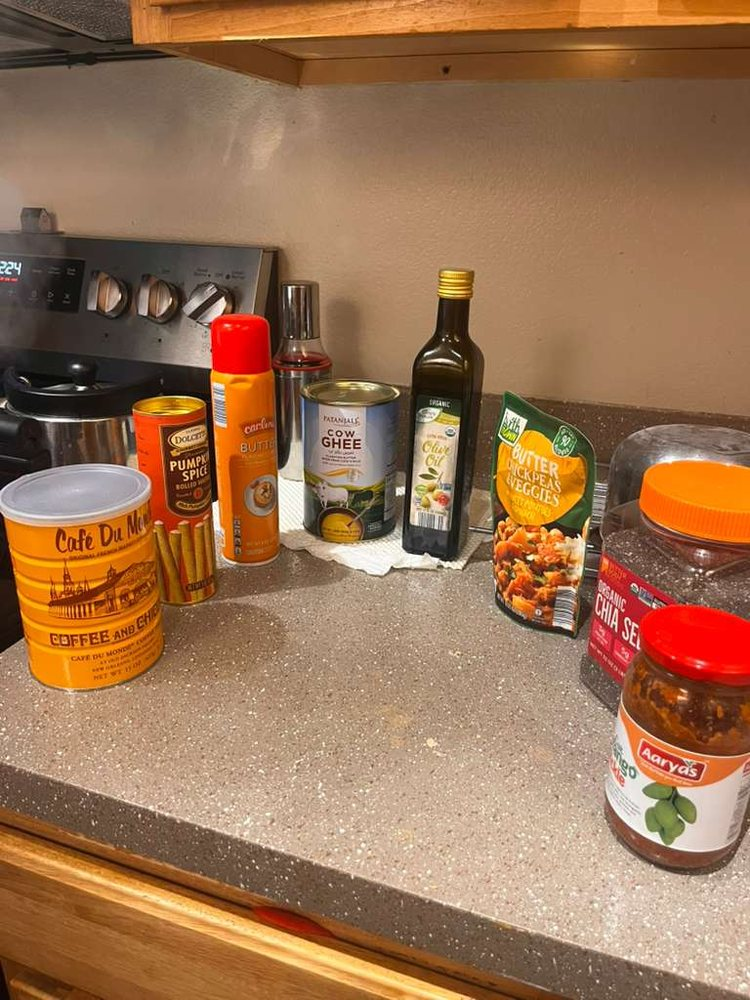
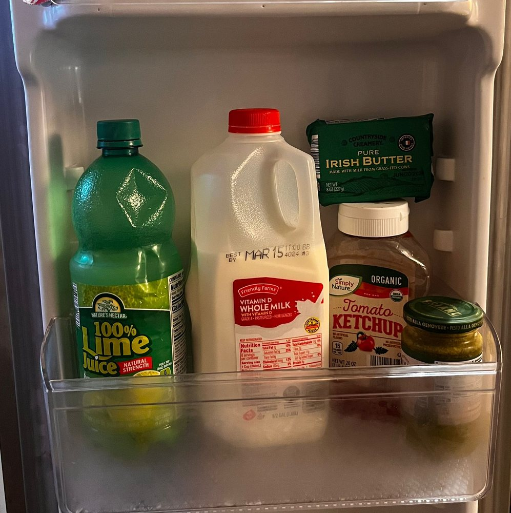
The setup. Four tests, growing from one photo to a whole kitchen. Ground truth was hand-checked: I listed every product myself before showing the models anything.
The scoring rule, applied per product:
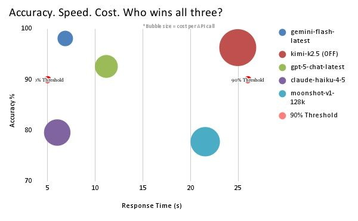
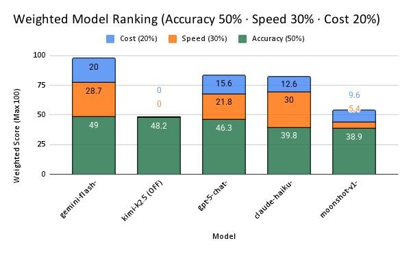
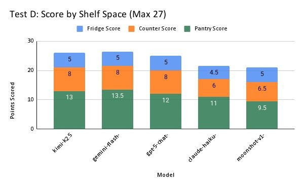
The calls that came out of it. gemini-3.1-flash-lite won all three axes and is the model in production. gpt-5-chat-latest is kept as the fallback for one specific reason: it runs on completely separate infrastructure, so if Google has an outage, capture still works. And the per-area chart shaped the product itself: the pantry shelf is where every model struggled most, because products hide behind each other. That is a physics problem, not a prompting problem, so the capture flow asks for a few angles per area instead of pretending one photo is enough.
An inventory that keeps itself honest
Epic goal: the pantry stops being a list you maintain and becomes a signal you act on.
%20virtual%20pantry%20page.jpeg)
Signals, not a spreadsheet
What it fixes: an inventory you can't act on is just a list.
The home screen leads with the three numbers that drive a decision. In the demo pantry shown here that's 92 items, 58 expiring soon, 11 running low, with an expiry badge on every item. Because capture recorded amounts and dates, the app can honestly tell you that you're short, later, mid-cook.
%20pantry%20page%20collapsed%20view.jpeg)
Let the user control the density
What it fixes: a heavy pantry is a wall of scrolling.
Categories collapse to counts, like Condiments & Spices 33 and Dairy & Eggs 11, with one control to expand or collapse everything. Whether a full pantry feels manageable or exhausting is a real product decision, so the density got designed, not defaulted.
A daily menu matched to your kitchen
Epic goal: nobody should answer "what's for dinner" from a blank page again. Four user stories, four screens.
%20this%20is%20the%20settings%20page%20where%20uses%20can%20set%20preferences%20so%20the%20chef%20curates%20only%20with%20this%20knowledge.jpeg)
Teach the chef once; it never crosses the line
What it fixes: a generic menu suggests things you'd never cook, or worse, can't eat.
Cuisines you like, dietary choices, and allergies (Shellfish, flagged in red) become permanent rules for the nightly menu. Allergies aren't a filter you keep re-applying. They're a hard boundary the chef cannot cross, and with food, that's the difference between a fun feature and a trustworthy one.
%20ai%20chef%20curates%20recipes%20from%20the%20pantry.jpeg)
Four meals a day, ranked by what you own
What it fixes: the real job was never "track my pantry." It's "decide dinner."
Every night the chef builds breakfast, lunch, dinner, and snacks, two to three options each. Two rules drive the picks: a recipe has to match at least 75% of its ingredients to your pantry to make the cut (anything below is dropped, not padded), and ingredients closest to expiry get priority, so the menu actively rescues food before it dies. Every card carries full nutrition. This is where the work of scanning your pantry pays off.
%20recipe%20detailed%20page.jpeg)
Adjusts to who's eating, and honest about what's missing
What it fixes: recipes assume a fixed household and a full pantry. Real kitchens have neither.
The Adults / Kids scaler recalculates every amount live (the app stores every ingredient in standard units underneath, which is what makes the math trustworthy), and an Easy / Medium / Elaborate toggle rewrites the method. If you're short on something, it says so and offers a swap from what you own.
%20even%20request%20for%20custom%20recipes.jpeg)
Don't like tonight's menu? Ask for what you want
What it fixes: a fixed menu can't guess a craving.
From any recipe you can ask the chef for something new: a different dish, or a tweak like "make it lighter" or "swap the beef." The answer stays inside your pantry, so it's always something you can actually cook tonight. Under the hood this is a separate agent from the one that builds the nightly menu; more on that in the architecture.
Guided cooking, whichever way is convenient
Epic goal: the same guided cook, two ways in. Chat when you're reading and planning; voice when your hands are busy. Not a sequence, a choice.
%20chat%20mode%20with%20chef%20this%20comes%20first%20in%20the%20flow%20fyi.jpeg)
One clear step at a time, one button to advance
What it fixes: full recipe pages are unreadable while you cook.
Cook mode is a chat with the chef: one small step at a time, a single Done button to advance, and an open box to ask anything, like "can I swap butter for oil?" Timers can be set by you, or the chef starts them itself from the step. The waveform button in the corner switches to voice.
%20hands%20free%20voice%20mode%20for%20guided%20cooking%20experience.jpeg)
Same cook, hands free, nothing falls out of sync
What it fixes: touching a phone with wet or oily hands, and losing your progress when you switch modes.
Tap the waveform and a live voice conversation takes over the same cook session. Say "go back to step 2," "set a timer for the rice," or "I'm out of cumin," and it checks your live pantry, edits the recipe, moves the steps, and runs timers with lock-screen alerts. Chat and voice share one session and one source of truth, so switching between them never loses your place.
Finish cooking, and the loop closes itself
Epic goal: the inventory stays true with zero upkeep, because upkeep is the exact chore this product exists to remove.
%20find%20saved%20and%20cooked%20recipes.jpeg)
"Done cooking" saves it, deducts it, and feeds it back in
What it fixes: manual inventory upkeep, the chore that kills every pantry app.
Hitting done cooking does three things at once: the recipe lands in your Cooked library, the ingredients you used come off the pantry, and tomorrow's menu rebuilds around the new stock, pushing whatever is now closest to expiry to the top. The Kitchen tab shows the payoff: a weekly streak, 7 meals this month, and 15 ingredients used. That last number is the whole promise of the app, counted.
05Architecture
The user sees one chef. Underneath there are two separate flows that never run at the same time: what happens while you cook, and what happens while you sleep. The app is SwiftUI on iOS. Supabase (Postgres) holds the one copy of the truth. Two small services on Google Cloud Run talk to the models, so the app itself never holds a model key.
Flow 1 · When you cookiPhone app
One cook session, two doors: chat or voice.
Chat
Reads your live pantry and the recipe, answers questions, decides which tools to call.
Voice
Live speech in and out through Gemini Live. Same pantry access, same tools as chat.
recipe-ledger
Owns your copy of the recipe: the ingredient list with any swaps, and the steps. Every change goes through here. 10 operations, ownership checked once.
Postgres
One copy of the recipe, the steps, and your progress.
Why the ledger exists. Both agents can read your pantry inventory directly; that is how "I'm out of cumin" gets an answer from what you actually own. But writing is different. Chat and voice can both change a live cook: swap an ingredient, reorder steps, mark one done. Two writers on the same recipe is how things drift apart. So neither of them writes anything. Both hand their changes to recipe-ledger, which owns your copy of the recipe, meaning the ingredient list with any substitutions, the steps, and your progress through them, and returns a fresh snapshot after every change. That is the entire reason you can start a dish in chat, switch to voice with wet hands, and find your step, your timers, and your swapped ingredient exactly where they should be.
The detail I'm proudest of. When the ledger swaps an ingredient, it also returns a list called affected_steps: the steps that still mention the old ingredient. The chef doesn't have to notice the mess on its own. The tool hands it the cleanup work. Designing the tool so the model can't quietly leave the recipe broken worked better than any prompt instruction.
Cloud Scheduler every 15 min
Pokes the pipeline around the clock.
curate-dispatch
Finds users whose local time just hit midnight, wherever they live, and hands each one to the curator. Running per timezone also spreads the load across the whole day.
curate-recipes gemini-3.1-flash-lite
Builds the day's menu from the live pantry and preferences. Drops any recipe under a 75% pantry match, and puts ingredients closest to expiry first. Searches the web only when it needs to check a dish is real.
paint-drain every few min
Recipes are saved without images first. This worker finds the next few unpainted ones and calls the painter for each, with pauses and retries, so the image service never gets hammered.
paint-recipe ZImageTurbo_INT8
The painter itself, called once per dish by the drain. First asks Gemini what the finished dish actually looks like (with web search), then sends that description to the image model. 1024×768, 8 steps.
Storage → your morning menu
Finished images land in Supabase Storage. You wake up to a fresh, fully illustrated menu.
One honest scar. Voice originally ran as a Supabase function too. Long cooking conversations kept hitting the platform's execution time limits, so voice moved to its own Cloud Run service on a WebSocket. The old function is still in the repo as a retired stub, on purpose, so the history of the decision stays readable.
06Tech stack
recipe-ledger as the only writer
vertex-proxy
Cloud Run voice-chef
Cloud Scheduler
deAPI image generation
Open Food Facts lookup
gemini-3.1-flash-lite · menu, chat, vision
gemini-live-2.5-flash · live voice
Google Search grounding · fact checks
ZImageTurbo_INT8 · thumbnails
Every model name above is the exact string pinned in the repo, not a marketing name.
07One chef, four modes
You only ever talk to "the chef." Behind it, four separate agents each do one job. One prompt trying to do all four would be worse at every one of them, and splitting them means each can be tuned, priced, and tested on its own.
The chat and voice modes share one toolbox: read the pantry, edit, add, remove, or swap an ingredient, edit or reorder steps, mark a step done, set the current step, set a timer, cancel a timer. Ten operations, one writer, two doors.
08Choosing the image model: a bake-off, not a vibe
Every recipe card gets a generated photo, and at roughly 300 recipes per user per month that's a recurring bill, not a one-off. I tested four image models with the exact same prompt and judged one thing: did it draw what was asked?
Commercial food photography of a gourmet spinach ravioli dish. The bright green pasta shapes are arranged elegantly on a minimalist matte white plate. Drizzled with a vibrant golden olive oil, garnished with crispy sage leaves and toasted pine nuts. Bright, clean, natural daylighting from a window, soft shadows, overhead angled shot (45 degrees), crisp focus, professional food styling, vibrant colors.
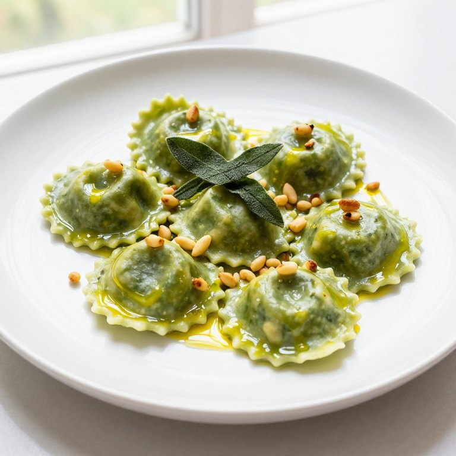
Nails the window daylight (you can see the window frame in the background), real teardrop pine nuts, and the pasta looks translucent and real.
Shipped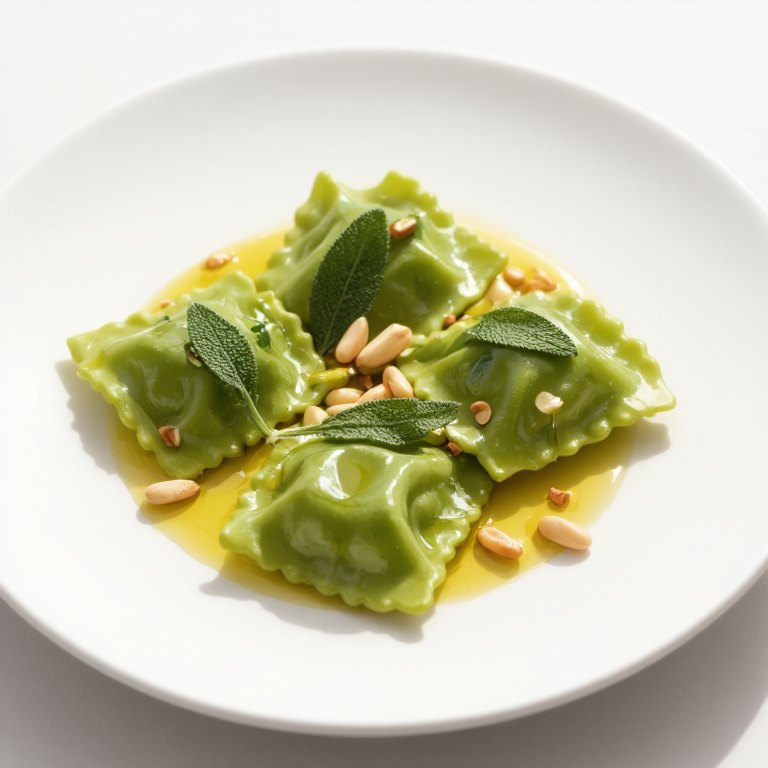
White plate and pine nuts right, but the light is flat studio white instead of window daylight, and the pasta looks a bit uniform and plasticky.
Runner-up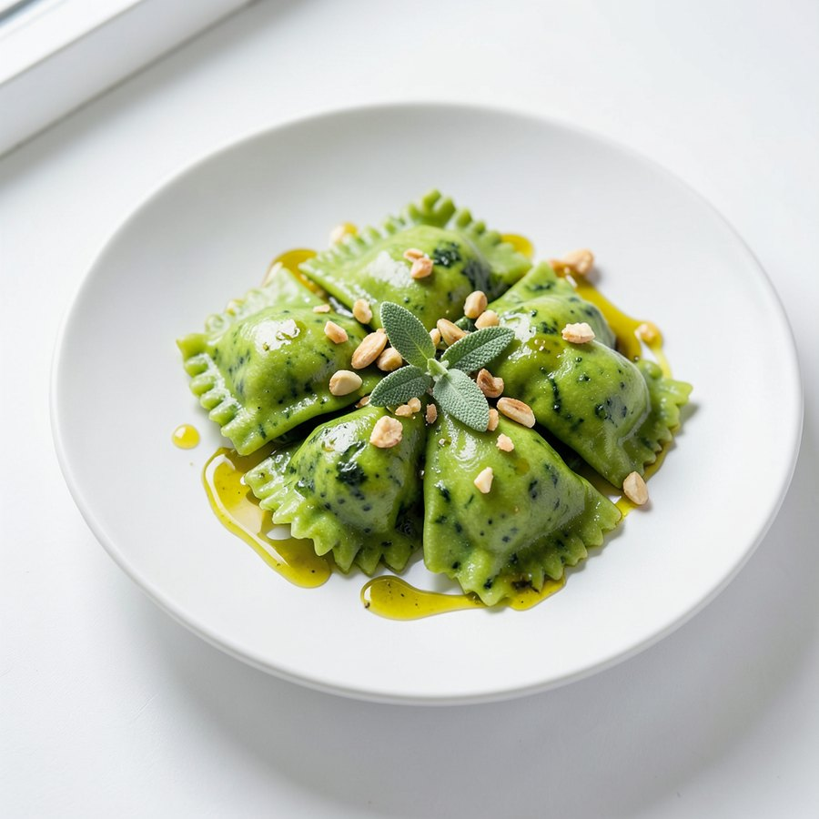
Pretty, and the cheapest by far. But it drew chopped walnuts instead of pine nuts and mixed herb flecks into the dough that nobody asked for.
Cheap fallback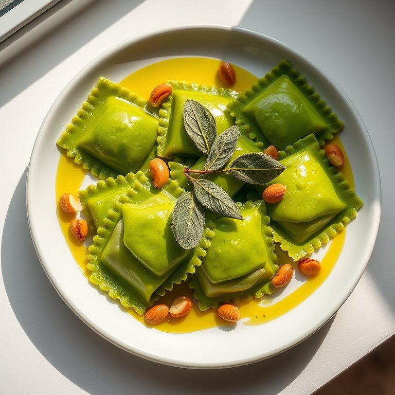
Whole peanuts instead of pine nuts, oil pooled like thick soup, and harsh light. An anime model doing photoreal food, and it shows.
RejectedThe call. Z-Image-Turbo INT8 won on accuracy and is the model in production: the repo pins PAINTER_MODEL = "ZImageTurbo_INT8" at 1024×768, 8 steps. Wrong garnish on a recipe card is a trust bug, so the cheapest model didn't win. But FLUX.1 Schnell stays on the bench as a documented fallback: it's 3.3× cheaper and its only failure was the nuts.
Going outside Google saved 84% on this line. Google's own image model costs $0.039 per image, six times the winner. At 300 images a month that's $11.70 versus $1.90 per user. Staying inside one vendor's ecosystem would have quietly wrecked the economics.
Two production details. The image model never gets the raw dish name: the painter first asks Gemini, with web search, what the finished dish actually looks like, then paints from that description, so unfamiliar dishes don't turn into guesses. And the prompt bans "scattered ingredients," added after early runs kept littering plates with raw onions and flour that weren't in the recipe.
The winner's identity is verified from the repo. The other three labels are reconstructed from my eval notes against each model's look and price.
09What one user costs me a month
An AI app lives or dies on what each user costs to serve, so I priced a full month for one heavy paying user, line by line, at the published API rates. Two findings shaped the whole product: the language model is nearly free, and the two expensive things are ones the user never sees.
The assumptions, stated up front
$0.019 a night$0.0003 each$0.014 · first 5,000 a month are free account-wide$0.006329$3 / 1M$12 / 1M · spoken output costs 4× input$0.0037 · the rate from my own benchmarkThe fix: stop paying for silence. The obvious voice build streams the microphone for the whole cook, and Google bills every second that arrives, silence included. That's the $2.70 line. The fix is to detect speech on the phone and only send audio while someone is actually talking, about 4 minutes out of 30. Same experience for the user, and $2.70 becomes $0.36. The re-reading line shrinks too, because there's less audio history to re-read.
What I chose not to fix. Thumbnails and web searches stay at full price on purpose. Every user's menu is built from their own pantry, so the dishes are close to unique per person. Sharing images between users sounds clever, but real matches would be rare, and I'm not going to count savings I can't prove.
What's built versus planned, honestly: the voice service already trims history before each reply. The on-phone speech gating is the roadmap. And the "re-reading" line is an estimate by design; the beta exists partly to replace it with logged numbers.
The line that can't shrink is the right one. After the fix, the biggest single cost left is the chef actually speaking, $2.16. That's not waste. That's the product. When your biggest cost is the thing users love you for, the model is healthy.
A lever held in reserve. Everything above assumes a heavy user: 20 voice cooks a month, roughly 10 hours of sessions. The one thing that could still break the math is the extreme tail, someone running voice for hours every single day, because every spoken minute has a real cost. So Premium voice carries a fair-use line set at double the heavy user, about 40 cooks or 20 hours a month, before the app slows anyone down. Almost nobody will ever touch it. But it means the worst possible user costs about $10.80 to serve against $14.99, still a 28% margin. The margin can be squeezed. It cannot go negative.
10What the cost sheet says about pricing
The cost sheet hands you the packaging: charge for the expensive thing, give away the cheap thing that builds the habit. The nightly menu is what brings people back and it costs cents. Voice is what people rave about and it's the biggest line. So the menu is free and voice is the upgrade.
- ✓Unlimited pantry capture: photo, barcode, voice
- ✓Daily menu, up to 5 recipes a day, real generated photos on every card
- ✓Full chat cooking: steps, timers, swaps
- ✓Auto-deduction and the Kitchen streak
- ✕No voice mode
- ✓Everything in Free
- ✓The full menu: all four meals, ~10 recipes a day
- ✓Voice mode: hands-free guided cooking, fair use up to ~20 hours a month
- ✓Custom requests: ask the chef for any dish
- ✓Elaborate difficulty mode
The free tier isn't crippled. It fully solves dinner, which is the job most people came for, and five recipes a day is a real menu. What's gated is the expensive delight (voice) and the breadth (four meals a day), which is exactly what the cost sheet says to gate.
11North star
It's the only number that proves the loop closed. A scan that never becomes a cooked meal saved nothing. A cooked meal is food used instead of wasted, a habit reinforced, and the one event that makes tomorrow's menu smarter. Downloads don't move it. A working loop does.
Each input maps to one epic, on purpose. Capture completion tests Epic 1. Menu-to-cook tests Epic 3. Cook completion tests Epic 4. And deduction quality, Epic 5, is what keeps the next day's menu honest. If the north star stalls, this tree says which epic broke. The cost guardrail sits next to it because in an AI product, a north star you can't afford isn't a strategy.
12Go-to-market
The whole plan leans on one ten-second demo: "one photo of my receipt logged my entire shop." That's the moment that separates PantryChef from every typing-based pantry app, so every channel leads with it. In order:
Closed beta with 50 real kitchens
Not for growth. For the numbers the whole model rests on: do people really cook five nights a week with it, does capture survive kitchens that aren't mine, and what does a voice session actually cost? The beta replaces my estimates with logs before a dollar goes into marketing.
Exit gate · median 3+ cooked meals a week by week 3The receipt demo, where the guilt already lives
Short videos on the exact pain: "here's what died in my fridge this week," ending on the receipt scan. Food-waste and budget-cooking creators already have this exact audience. Organic first; pay only the creators who prove they convert.
KPI · install to first cooked meal within 48 hoursOwn the searches people already type
App Store search terms like "reduce food waste," "what can I cook with," and "pantry tracker." Low competition, and the person searching already feels the pain. This is the cheapest install there is, and it runs underneath everything else.
KPI · organic share of installsMake the payoff shareable
"You used 15 ingredients this month" already lives in the Kitchen tab, and it's the kind of stat people actually want to share. Turned into a share card, it advertises the outcome, not the app, and it closes an organic loop that paid ads can't buy.
KPI · installs per shareWhen the upgrade sells itself. Free solves dinner. The upgrade prompt fires the first time a free user asks the chef a question with messy hands. That's the moment voice stops being a feature on a pricing page and becomes the thing they need right now.
13What it taught me
When the product is a loop, features get judged by the loop, not by themselves. Scanning barcodes one at a time is a perfectly fine feature that would have quietly killed the product. The only question that mattered was whether a decision made capture, curation, cooking, or deduction stronger.
The seams between agents are where quality lives. One chef in front, four agents behind, joined by a single writer that even hands back the cleanup list after a swap. That contract, not any one agent, is what makes switching from chat to voice mid-cook feel like nothing happened.
Price the plumbing before your gut prices the product. I assumed the language model would be the big cost. It's cents. The real money was in an open microphone billing me for silence, and finding that early is what wrote the pricing page. The cost sheet decided the business model. My intuition would have gotten it wrong.